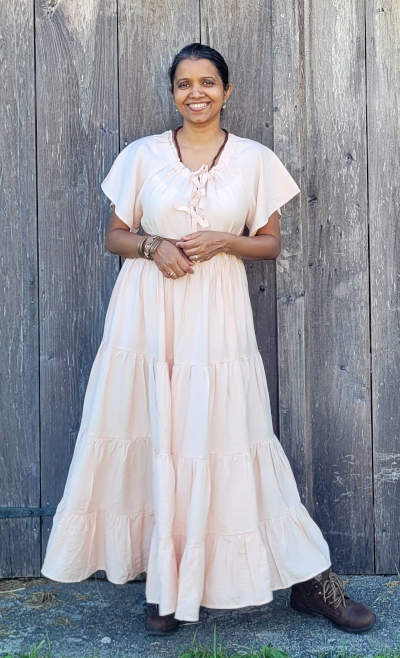

An Engineer by training, I have 15 years of professional experience with people
management in the field of Information Technology. With a Master's degree in
Human Resources, I have coached and empowered people throughout my career.

Growing up in India, I found myself constantly at odds with the world around me. I consistently questioned the complacency and norms of society. I was seen as rebellious by those around me, but I knew deep down inside that I was fearless and courageous. I wanted to have personal, even uncomfortable, conversations. I yearned to be the change I wanted to see in the world. These thoughts and ideals continued to haunt me as I migrated to the United States.
Challenging the status quo in every phase of my life made me an outcast. Deeply wounded, I started questioning and blindly chased the purpose and meaning of my suffering, and the meaning of discrimination, love, and the claim of the existence of “God.” This quest found me utterly lonely, in a foreign country. My inner world was crumbling, though my outer world was flourishing with my successful career in the IT industry.
My innate nature was, is to be trusting, true to myself, and make heart-led choices. But without personal power behind these, I found I was naïve. I experienced intense personal losses which left me severely depressed in a foreign country with suicidal thoughts. Then, during these darkest moments of my life, I had a “spontaneous spiritual awakening.” This left me in a state of unconditional love & euphoria for months. This awakening ended my suffering. It led to my discovery & integration of personal power.
Due to the awakening experience and with the help of many modalities like life coaching work by Tony Robbins & Chloe Maddanes, Akashic Records work by Linda Howe, and QHHT work by Cannon Dolores, I have discovered the light within, gained clarity on the kind of life I wanted to live, became a more effective leader, achieved health and fitness goals, and mastered relationships.
It's through my experiences and continued use of various coaching practices, that I have learned to live a conscious life filled with love, compassion, and clarity. Being deeply rooted in the truth of existence has also guided me through tribulations, such as the loss of loved ones, with grace and understanding.
I am grateful to have learned that creating sacred spaces, allows people to feel safe enough to show their vulnerable side, and appreciate being seen, heard, and understood. This gift is a critical asset that allows me to now assist and guide others as they journey through the unknowns of their life, with much love, compassion, clarity, and confidence.
I offer to you a space of - unconditional love, grace, compassion, and guidance through different modalities that will empower you to live your life by design and not by default.
It is my honor, joy, and pleasure to offer you services that can radically transform your life.
YOU are the greatest story you will ever KNOW.
YOU are the most important person in your LIFE.
YOU are the LIGHT you SEEK.
Much love,
Rashmi